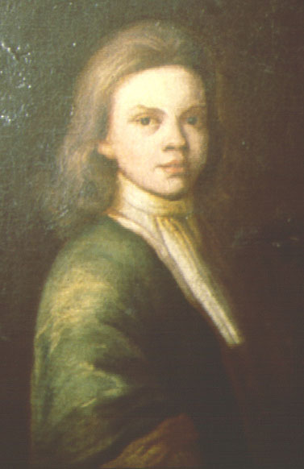

|
by Stefan Bielinski Edward Collins was born in Albany, the eldest of the three children of of John and Margarita Schuyler Verplanck Collins. He grew up in a comfortable Albany home - nurtured by his mother's extensive family and in the company of his older half-brothers. Before long, young Edward would accompany his father - an officer in the garrison companies, to the Albany fort, to Schenectady, and out to the frontier where he experienced the life of a peacetime soldier. In the meantime, he also learned the principles and practices of his father's other varied enterprises. On the death of John Collins in 1728, Edward was able to take over all of his activities. He performed survey work; continued the Collins legal practice; was commissioned an officer - becoming a captain and then serving as the Albany "town major"; and was appointed to the Commissioners of Indian Affairs. This Albany native also performed legal and contract work for the city government. Like his father, these occupations would make him quite wealthy. In addition, he was an active partner in the Walloomsac Patent granted in 1739. At age twenty-nine, he married twenty-year-old Margarita Bleecker on December 9, 1733. The marriage produced no children but both partners acted as godparents at a number of baptisms in the Albany Dutch church. Like many garrison soldiers, Edward Collins became a member of St. Peters Anglican church - where he served as a church warden for the remainder of his life. By the mid-1740s, his enterprises had matured and Edward Collins devoted himself to managing his assets. He occasionally acted as attorney and agent - including representing the Westenhook patentees in New York. In 1746, he was appointed "Recorder" or deputy mayor of Albany. He may have held that office until his death. He later characterized himself as a "gentleman," which would have set him apart from most of his Albany neighbors. Edward Collins died in March 1753 a few months shy of his fiftieth birthday. His extensive estate consisting of land and tenaments, gold and silver, household furniture, and negroes and negro wenches was left to the discretion of his wife Margaret - his sole heir. This limner portrait of young Edward Collins painted about 1716 is in the collection of the Albany Institute of History and Art. His brothers were Gullian (1693-1745) and Philip (1695-1771) Verplanck - the children of his mother's marriage to Jacobus Verplanck. As "town major," Collins oversaw repairs to the stockade and the enlargement of the fort and blockhouses. His diverse offices and legal career made him an important associate of the Albany corporation. first posted: 1999; last revised: 7/11/12 |